STEAL A SEEKER / DISTRICT ART V412 heists.
Three different places.
The old game reused the same floor texture everywhere. Districts now have their own floor material, boundaries and props. These are screenshots of the actual playable game.
Every mission raises the alarm after theft. Mobile guards start at 2.2× patrol speed, rising to 2.8×. What changes below is the route, security system and delivery task. Scenery follows the existing collision geometry.
MISSIONS 01–0401 / Warehouse
Dark plate flooring, loading lanes, shipping crates and sorting racks. Four heists about cover, patrol timing and the trip back.
01 / Loading bayQuiet Pickup
One pickup lane. Learn to steal and escape.
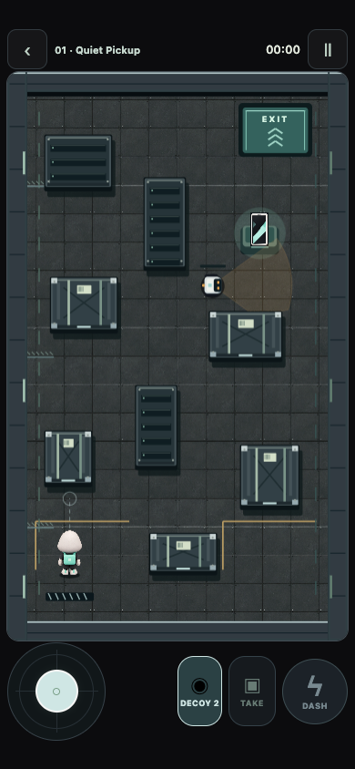
1 guards · 2 decoys · 1 deliveries
02 / Sorting depotCone Lesson
Break line of sight around the central rack.
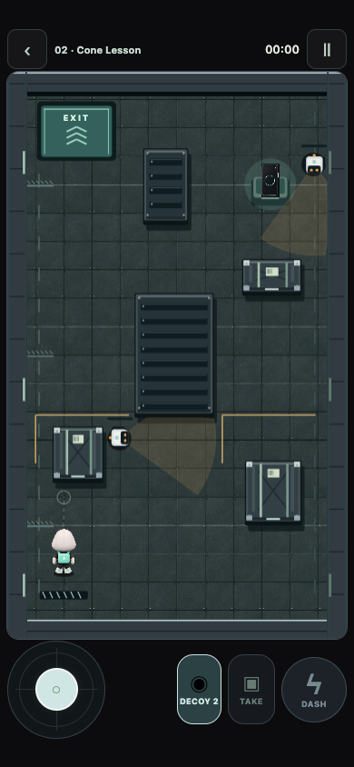
2 guards · 2 decoys · 1 deliveries
03 / Dispatch laneBattery Dash
A long return trip. Save charge for the escape.
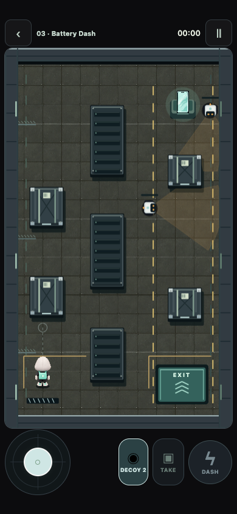
2 guards · 2 decoys · 1 deliveries
04 / Freight junctionCrossing Signals
Cross two patrol lanes, one at a time.
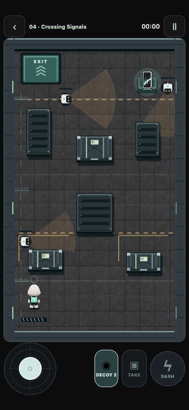
3 guards · 2 decoys · 1 deliveries
MISSIONS 05–0802 / Rooftops
Blue roofing, city edges, mint rails, HVAC fans and antennas. Scanners, alternating bridge gates, decoys and a Warden.
05 / Scanner roofSweep Window
Move between the tower scanner’s sweeps.
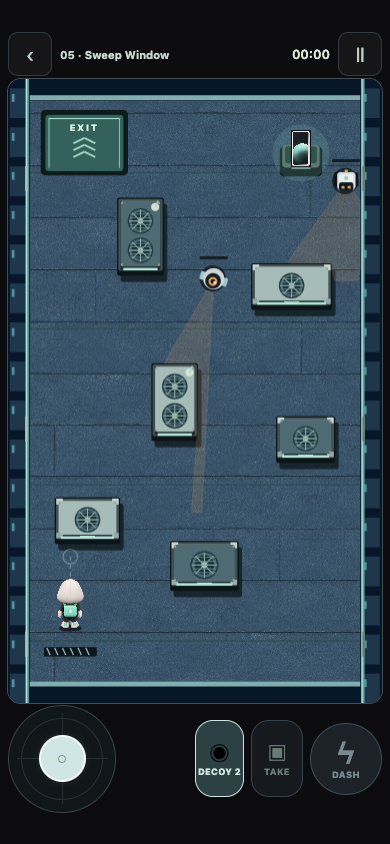
2 guards · 2 decoys · 1 deliveries
06 / SkybridgesNarrow Crossing
Two bridge gates open on alternating timers.
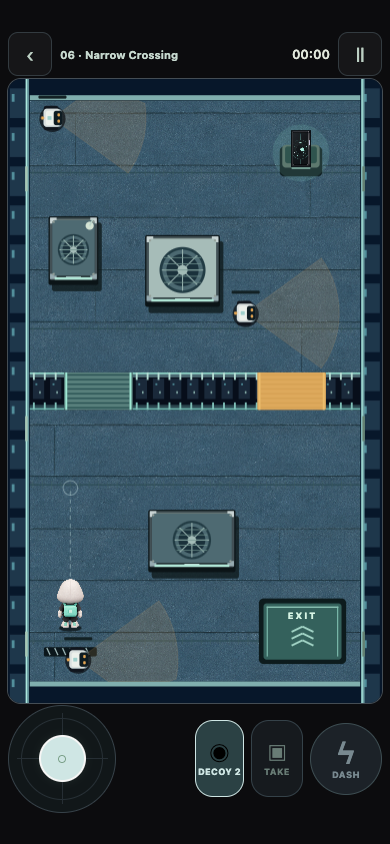
3 guards · 2 decoys · 1 deliveries
07 / Antenna terraceFalse Footsteps
Lure patrols away from the narrow lanes.
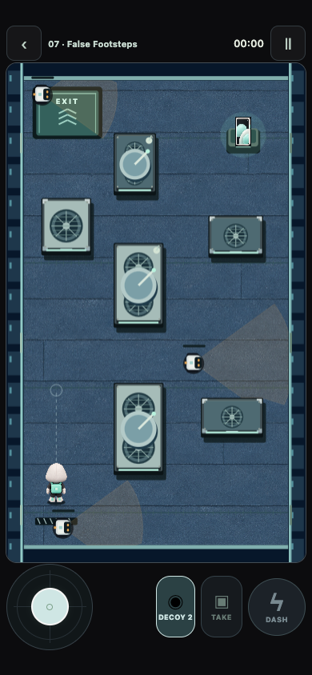
3 guards · 2 decoys · 1 deliveries
08 / Warden landingWarden Gate
A long-range Warden protects your exit.
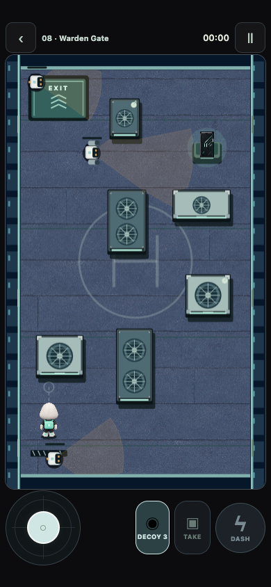
3 guards · 3 decoys · 1 deliveries
MISSIONS 09–1203 / Powerworks & Vault
Silver-sage panels, inset circuit paths, purple server racks and reactor housings. Circuit doors, relays and multiple deliveries.
09 / SwitchyardPower Trade
Swap circuits to open doors and change scanner power.
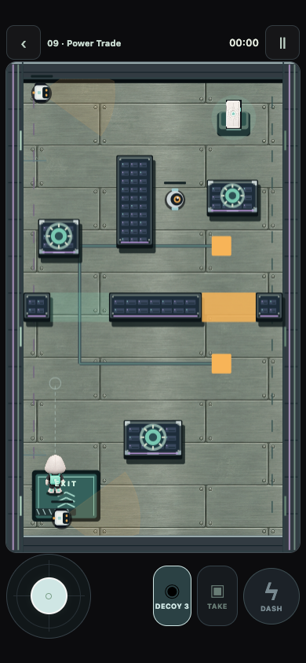
3 guards · 3 decoys · 1 deliveries
10 / Twin archiveTwo Targets
Two deliveries. The alarm stays on between them.
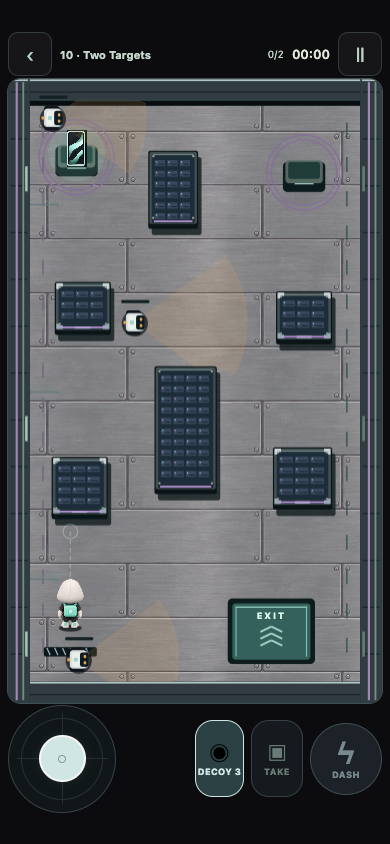
3 guards · 3 decoys · 2 deliveries
11 / Relay chamberSilent Circuit
Each relay opens its door for nine seconds.
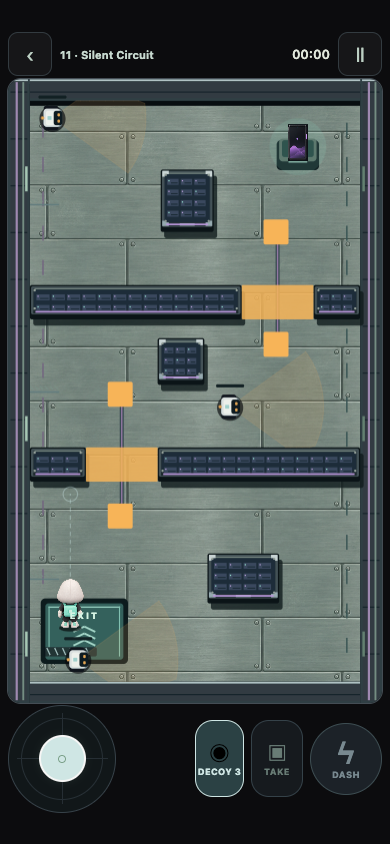
3 guards · 3 decoys · 1 deliveries
12 / Inner vaultThe Last Vault
Two phones, circuit doors, a relay and a Warden.
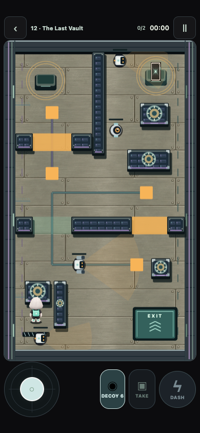
4 guards · 6 decoys · 2 deliveries